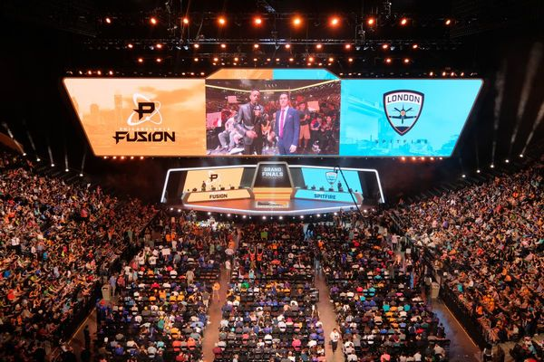
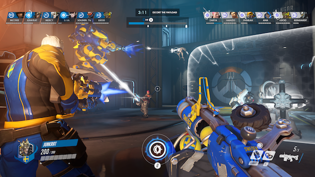
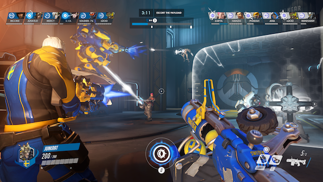

 
Overwatch est un jeu vidéo de tir avec une vue en première personne (ou FPS) multijoueur en ligne dans lequel s’affronte deux équipes de 6 joueurs. Overwatch a été développé et publié par Blizzard Entertainement. Le jeu a été annoncé en novembre 2014 lors de la Blizzcon puis a été commercialisé le 24 mai 2016 sur Windows, Playstation 4 et Xbox One. Overwatch est un jeu à vocation compétitif et c’est dans cette optique que c’est développé l’Overwatch League

Overwatch est un jeu vidéo de tir avec une vue en première personne (ou FPS) multijoueur en ligne dans lequel s’affronte deux équipes de 6 joueurs. Overwatch a été développé et publié par Blizzard Entertainement. Le jeu a été annoncé en novembre 2014 lors de la Blizzcon puis a été commercialisé le 24 mai 2016 sur Windows, Playstation 4 et Xbox One. Overwatch est un jeu à vocation compétitif et c’est dans cette optique que c’est développé l’Overwatch League
L’Overwatch League est une ligue professionnelle d’esport dédiée uniquement à Overwatch. Cette ligue est basée sur le modèle américain des franchises (comme en NBA ou NFL), chaque équipe représente une ville et a une place pérenne dans la ligue. Les équipes s’affrontent lors de la saison régulière et les meilleurs d’entre elles s’affrontent lors d’une phase finale afin de déterminer la meilleure équipe de la ligue.
Avec un zomm fait par nos soin sur 3 des 12 équipes de l'overwatch League les Valiant, les Excelsior et les Spitfire.